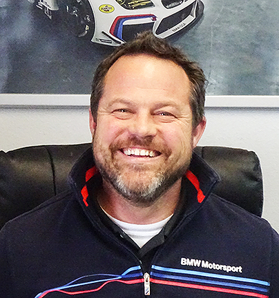

|  |
If you've been wondering where he went, wonder no more -- Bill Cray, one of the most highly respected BMW Service Advisors in Colorado for over a dozen years, has joined the staff at Bimmer Haus! Bill joins veteran BMW Master and Lead Technician Jon Myers and BMW and MINI Technician Zack Eberl-Coe to form what is undoubtedly the most talented and respected group of BMW service professionals you'll find anywhere in the western United States. You can read more about Bill.
|
|
For important information about steps we're taking to protect against the spread of the Coronavirus (COVID-19). |
|